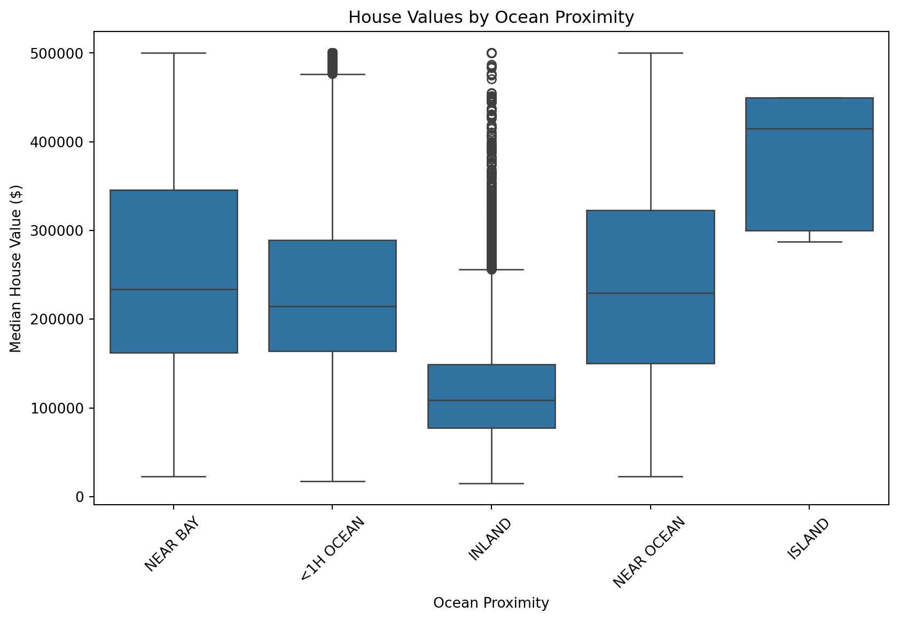
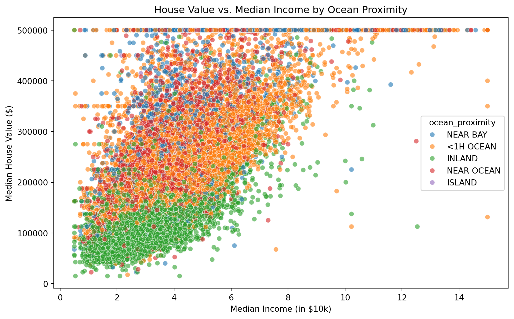
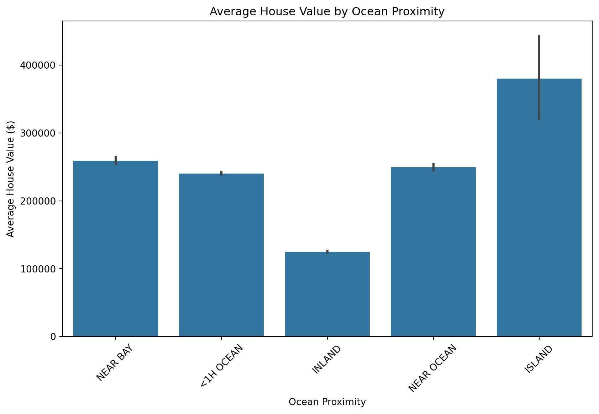
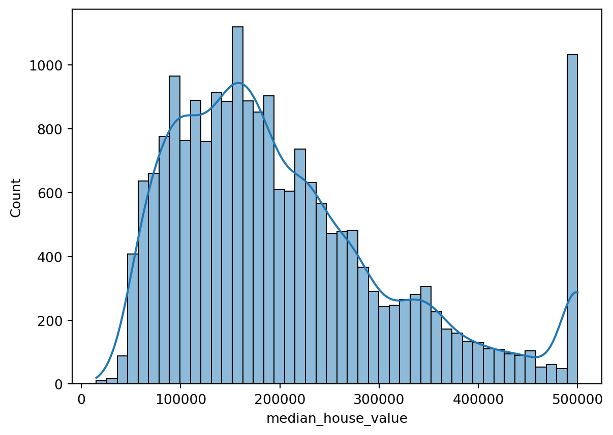
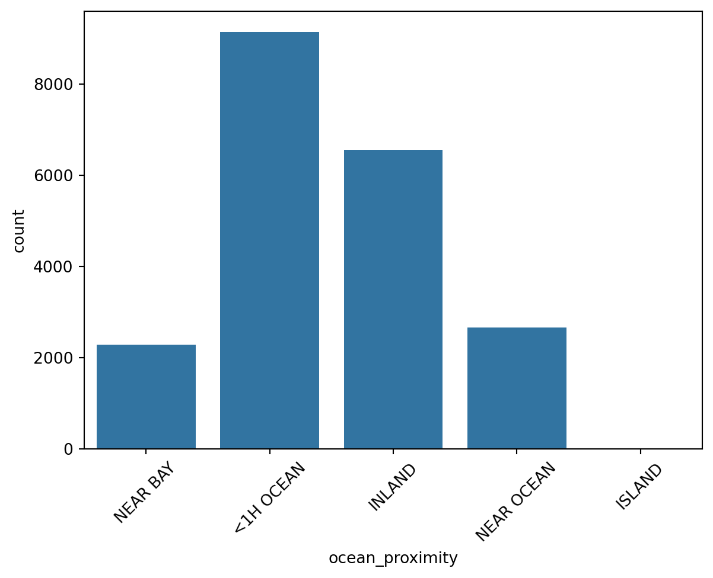
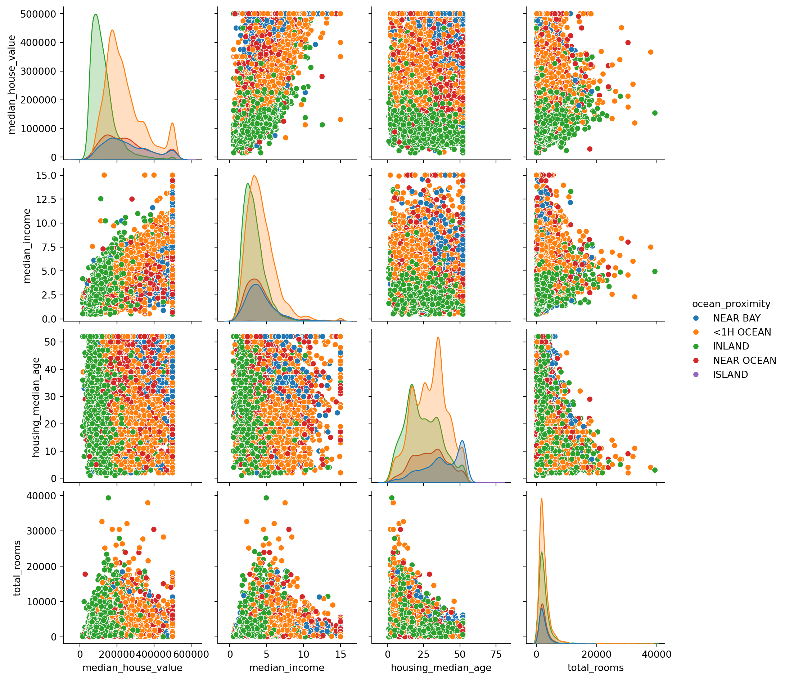
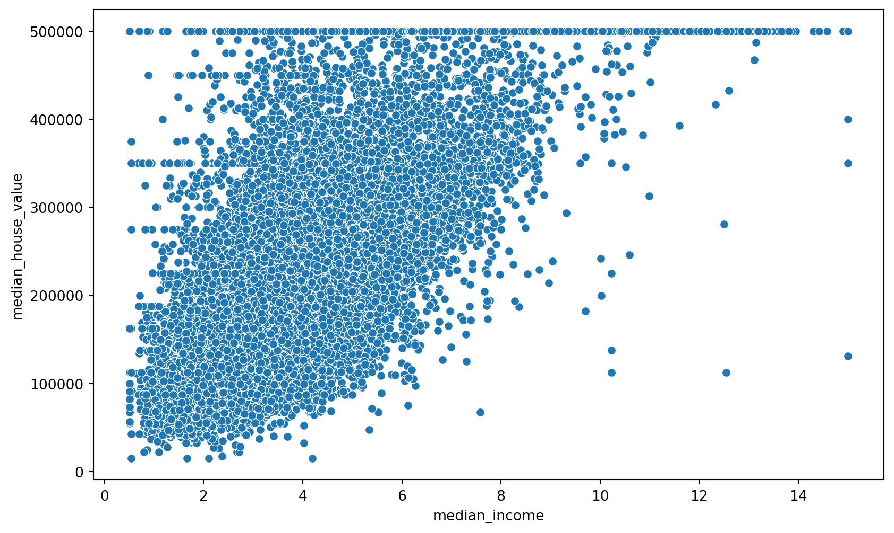
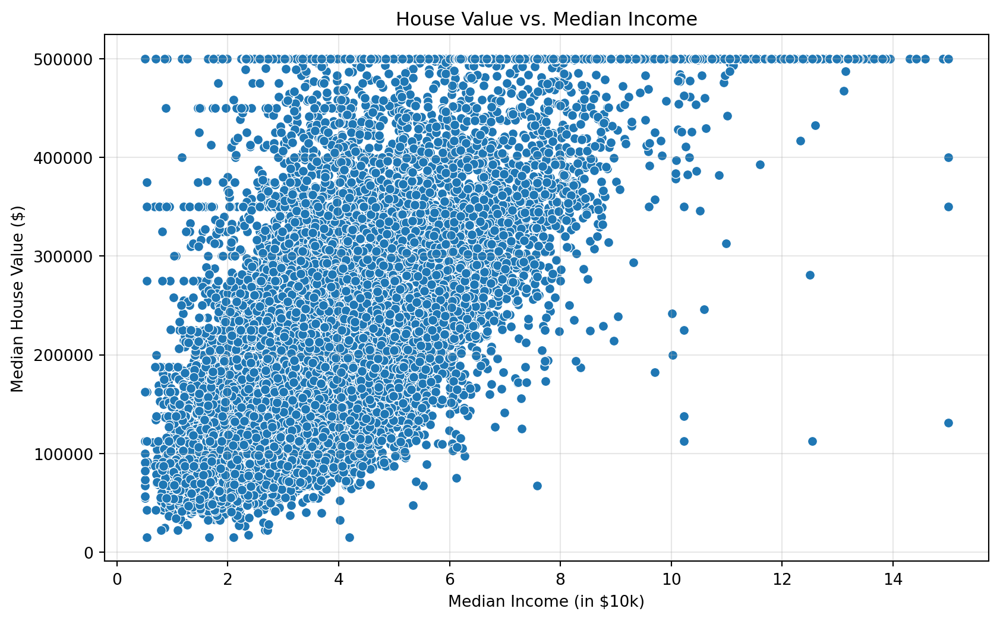
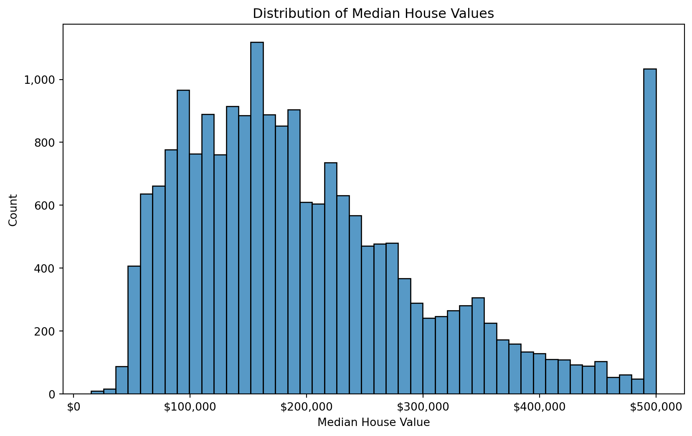

You can’t build effective models if you don’t understand your data. Exploratory Data Analysis (EDA) is the foundation of data science - it’s where you explore and understand your data before building models. In this first chapter we’ll learn the tools and techniques needed to do effective EDA.
AI Coding Assistants
Throughout this course we’ll learn both how to do work by hand, and how to use AI tools to scale our work. In today’s landscape, LLMs are exceptionally powerful, and can act as a “calculator for words”. However, it’s important to remember that LLMs are tools, not replacements for understanding.
Given the stochastic (unpredictable, non-deterministic) nature of LLMs, it’s important to learn how to work with them effectively as partners, rather than human replacements. It’s also important to learn how to do certain things by hand, such as calculating averages, making quick graphs, and selecting subsets of your data to analyze. If you’re reliant on LLMs to do every time step for you, you’ll take significantly longer to build models, and you’ll also be less likely to catch errors in your work. By learning to work with LLMs, instead of treating LLMs as a replacement for your own work, you’ll be able to build models more quickly and with greater accuracy.
1. Getting Started with AI Coding Assistants
1.1 Why Use AI for Coding?
Imagine the following situation: You have a data set with five columns of data, one of which is a target variable you want to predict. For example, you might be trying to predict the price of a house based on its size, number of bedrooms, number of bathrooms, and location. You want to build a model to predict the price of a house based on these features. This data is small enough that you could do the EDA by hand, including: - Making graphs for each column - Calculating summary statistics - Checking for missing values - Checking for outliers - Checking for data quality issues
However, what if your data had three hundred columns? Now you move well beyond what you could do by hand, and what could be analyzed by a human. This is where AI coding assistants come in.
This is exactly how we’ll use LLMs in this class. We’ll first learn the topics by hand at a foundational level and a small scale. Then, we’ll learn how to effectively use AI to scale our work.
Note
AI won’t take your job. Someone who knows how to use AI more effectively than you do will take your job. Be that person.
1.2 Writing Effective Prompts
Learning to write good prompts is like learning to communicate clearly with a colleague. You wouldn’t walk up to a coworker and say “make graph” and expect them to know exactly what you want. The same goes for AI coding assistants.
Here are the key principles for effective prompting:
1. Be specific about what you want
Don’t just ask for “a visualization” when you know you want a histogram. Tell the AI exactly what type of output you’re looking for.
2. Provide context
Let the AI know what data you’re working with, what columns exist, and what you’re trying to accomplish. The more context you provide, the better the results.
3. Start simple, then iterate
Don’t try to get everything perfect in one prompt. Start with a basic request, see what you get, and refine from there. This is much faster than trying to write the “perfect” prompt.
4. Specify the details that matter
If you care about axis labels, titles, colors, or specific parameter values, say so. If you don’t specify, the AI will make assumptions that might not match what you need.
Let’s look at some examples. Here’s a poor prompt:
“Make a graph of the data”
What’s wrong with this? There’s no context about what data we’re working with, what type of graph we want, or what we’re trying to show. The AI has to guess everything.
Here’s a better prompt:
“I’m working with a housing dataset that has columns for price, square_feet, bedrooms, and location. Create a histogram showing the distribution of house prices. Use 30 bins, add a title ‘Distribution of House Prices’, and label the x-axis as ‘Price ($)’ and y-axis as ‘Frequency’. I’m working in Python and using matplotlib for graphing.”
See the difference? This prompt tells the AI:
What data we have
What visualization we want (histogram)
What variable to plot (price)
Specific parameters (30 bins)
Formatting details (title, axis labels)
Let’s see this in action. Here’s what you might get from that better prompt:
import pandas as pdimport matplotlib.pyplot as plt# Assuming you have a DataFrame called 'housing_df'plt.figure(figsize=(10, 6))plt.hist(housing_df['price'], bins=30, edgecolor='black')plt.title('Distribution of House Prices')plt.xlabel('Price ($)')plt.ylabel('Frequency')plt.show()
Notice that even with a good prompt, you might need to iterate. Maybe you look at this histogram and realize you want different bin sizes, or you want to add grid lines. That’s fine! Just refine your prompt: “Great, now add grid lines to make it easier to read the values.”
The key is that you’re building on what works, not starting from scratch each time. This iterative approach is exactly how you should work with AI assistants throughout this course.
1.3 When to Use AI vs. Coding By Hand
How do you decide when to use AI, and when to do things by hand? You should start by asking yourself the following question: “How well do I understand my data and the task I’m trying to accomplish?”
If you understand it deeply and know exactly what you want to accomplish, then AI can be a great tool. However, if you’re just starting to understand your data, and/or the task isn’t clear, you should be working by hand.
Because LLMs take time to generate code, and because they often don’t do quite what you had in mind, at the early stages you can spend more time modifying/re-prompting an LLM than you would if you were doing things by hand. You want a quick feedback loop between your brain and your screen. As soon as a question pops into your head (“I wonder what the relationship is between…”) you should be able to answer it quickly. Changing your focus to work with an LLM will likely take too long, potentially result in more errors, and take you away from the task at hand.
Note
As you become more comfortable with your data and the task at hand, you can start to use AI to scale your work. You can use AI to generate code for you, and then modify it to fit your needs. You can also use AI to generate code for you, and then modify it to fit your needs. When you look at your work and say “I know I’m on the right track, now I just need to do more”, then you should be using AI to scale your work.
Learning outcomes:
By hand you should be able to:
Write prompts that effectively describe what you want the LLM to accomplish.
Critique prompts as to whether or not they follow the suggestions outlined above.
Know when to use an LLM, and when to write code by hand.
2. Data Manipulation with Pandas
Pandas is the workhorse library for data manipulation in Python. If you’re going to be a data scientist, you need to know Pandas inside and out. The good news is that once you learn the basics, everything else follows a similar pattern.
2.1 Loading Data
Let’s start with the most basic task: loading data into Python. Most of the time, your data will be stored in a CSV (comma-separated values) file. Pandas makes this incredibly easy.
import pandas as pd# Load the California housing datasethousing_df = pd.read_csv('../data/housing.csv')# Take a look at the first few rowshousing_df.head()
longitude
latitude
housing_median_age
total_rooms
total_bedrooms
population
households
median_income
median_house_value
ocean_proximity
0
-122.23
37.88
41.0
880.0
129.0
322.0
126.0
8.3252
452600.0
NEAR BAY
1
-122.22
37.86
21.0
7099.0
1106.0
2401.0
1138.0
8.3014
358500.0
NEAR BAY
2
-122.24
37.85
52.0
1467.0
190.0
496.0
177.0
7.2574
352100.0
NEAR BAY
3
-122.25
37.85
52.0
1274.0
235.0
558.0
219.0
5.6431
341300.0
NEAR BAY
4
-122.25
37.85
52.0
1627.0
280.0
565.0
259.0
3.8462
342200.0
NEAR BAY
What’s happening here? We’re importing the pandas library (always abbreviated as pd), then using the read_csv() function to load our data. The result is a DataFrame, which you can think of as a table with rows and columns, similar to an Excel spreadsheet.
The .head() method shows us the first 5 rows. This is always a good first step when you load data—you want to see what you’re working with.
Now we can see our columns and get a sense of what the data looks like. This is California housing data with information about different districts. Notice that each row has an index (0, 1, 2, 3, 4) on the left side. Pandas automatically creates this for us.
Let’s explore our data a bit more:
# How many rows and columns do we have?print(f'df shape: {housing_df.shape}\n')# What are the column names?print(f'df columns: {housing_df.columns}\n')# What data types are in each column?print('df dtypes:')print(housing_df.dtypes)
The .shape attribute tells us the dimensions of our DataFrame. The .columns attribute gives us the column names. And .dtypes tells us what type of data is in each column (integers, floating point numbers, strings, etc.).
Why do we care about data types? Because you can’t calculate the average of text data, and you can’t use numbers as categories. Making sure your data types are correct is a crucial early step in any analysis. Even things that seem like numbers may not be. For example, suppose that we had a row in our housing data which looked like this:
If we try to calculate the average house value, we’ll get an error:
housing_df['median_house_value'].mean()
because the median_house_value column isn’t numerical (it has a string value in it).
Note
You should always start by looking at your data using df.head()! This will help you catch any data type issues early. Following up with basic data checks (column names, data types, etc.) is also best practices.
2.2 Selecting and Filtering Data
Now that we have data loaded, we need to know how to slice it up and look at specific parts. This is where Pandas really shines.
Selecting columns:
# Select a single column (returns a Series)house_values = housing_df['median_house_value']# Select multiple columnsmultiple_cols = ['median_house_value', 'ocean_proximity']# Select multiple columns (returns a DataFrame)value_and_location = housing_df[multiple_cols]
Notice that, when selecting multiple columns, you should enclose them in a list, like ['median_house_value', 'ocean_proximity']. Here we did this in two steps: 1) Write down the columns we want, 2) Extract them from the data. However, there’s no reason you can’t do them in a single step:
Sometimes this can be confusing, because people think that double brackets [['median_house_value', 'ocean_proximity']] are some kind of special syntax. They’re not. They’re just a list of column names.
Filtering rows:
Here’s where things get really useful. Let’s say we only want to look at districts near the bay. We’ll break this out into multiple steps, and then show how to combine it in a single step.
# Check if each row is near the bay by creating a "mask"near_bay_mask = housing_df['ocean_proximity'] =='NEAR BAY'# Output: [True, True, True, True, True, False, False, ...]# Use this "mask" to filter the DataFramenear_bay_districts = housing_df[near_bay_mask]near_bay_districts.head()
longitude
latitude
housing_median_age
total_rooms
total_bedrooms
population
households
median_income
median_house_value
ocean_proximity
0
-122.23
37.88
41.0
880.0
129.0
322.0
126.0
8.3252
452600.0
NEAR BAY
1
-122.22
37.86
21.0
7099.0
1106.0
2401.0
1138.0
8.3014
358500.0
NEAR BAY
2
-122.24
37.85
52.0
1467.0
190.0
496.0
177.0
7.2574
352100.0
NEAR BAY
3
-122.25
37.85
52.0
1274.0
235.0
558.0
219.0
5.6431
341300.0
NEAR BAY
4
-122.25
37.85
52.0
1627.0
280.0
565.0
259.0
3.8462
342200.0
NEAR BAY
What’s going on here? The expression housing_df['ocean_proximity'] == 'NEAR BAY' creates a True/False (boolean) value for each row—True if the district is near the bay, False otherwise. Then we use that boolean mask to filter the DataFrame.
Here we split it out into two steps, where we first created the mask near_bay_mask = housing_df['ocean_proximity'] == 'NEAR BAY', and then used that mask to filter the DataFrame housing_df[near_bay_mask]. This is a common pattern when filtering data. However, you can also write this in just one step:
Once again, people sometimes find this confusing because of the housing_df inside the outer housing_df. However, as we’ve seen, all that’s going on is two steps: 1) Create a mask to select what you want (e.g. districts near the bay), 2) Use that mask to filter the DataFrame.
Let’s try some more complex filters:
# Districts with more than 1000 total roomslarge_districts = housing_df[housing_df['total_rooms'] >1000]# Districts that are both near the bay AND have expensive houses (> $400,000)expensive_bay_area = housing_df[(housing_df['ocean_proximity'] =='NEAR BAY') & (housing_df['median_house_value'] >400000)]# Districts that are either very cheap OR very expensiveextreme_values = housing_df[(housing_df['median_house_value'] <150000) | (housing_df['median_house_value'] >400000)]expensive_bay_area.head()
longitude
latitude
housing_median_age
total_rooms
total_bedrooms
population
households
median_income
median_house_value
ocean_proximity
0
-122.23
37.88
41.0
880.0
129.0
322.0
126.0
8.3252
452600.0
NEAR BAY
89
-122.27
37.80
52.0
249.0
78.0
396.0
85.0
1.2434
500001.0
NEAR BAY
128
-122.21
37.83
40.0
4991.0
674.0
1616.0
654.0
7.5544
411500.0
NEAR BAY
140
-122.18
37.81
30.0
292.0
38.0
126.0
52.0
6.3624
483300.0
NEAR BAY
155
-122.23
37.81
52.0
2315.0
292.0
861.0
258.0
8.8793
410300.0
NEAR BAY
Notice a few things: - We use & for “and” and | for “or” - We need parentheses around each condition when combining them - The comparison operators (>, <, ==) work just like you’d expect
Here’s a practical example. Let’s say you’re analyzing housing affordability and you want to find all inland districts with median incomes above 5 and median house values under $300,000:
This kind of filtering is something you’ll do constantly in data science. You’ll often want to analyze specific subsets of your data to understand patterns.
Note
Breaking complex queries, such as the affordable inland districts example above, into smaller steps can make it easier to understand and debug. Compare the query above with the same query written on a single line:
In this command, housing_df.isnull() is returning True/False for each value in the DataFrame. Then we use .sum() to count up the number of True values in each column.
So we have 207 missing values in the total_bedrooms column. What do we do about this?
Option 1: Drop rows with missing values
# Drop any row that has at least one missing valuehousing_clean = housing_df.dropna()# Drop only rows where a specific column (total_bedrooms) is missing a value# This is useful if this column is extremely important, and your analysis wouldn't make sense without ithousing_clean = housing_df.dropna(subset=['total_bedrooms'])
Warning
Be careful with this approach! If you have many columns and missing values are scattered throughout, you might end up dropping most of your data. This is especially true if you’re working with data with lots of columns and/or columns which aren’t especially important. For example, a store may have a rewards number column. However, not all customers are reward customers. If we dropped all rows with any missing value, then all non-rewards customers would disappear from our data!
Option 2: Fill missing values
# Fill with a specific value (e.g. zero)housing_df['total_bedrooms'] = housing_df['total_bedrooms'].fillna(0)# Fill missing values with the median (for numeric columns)median_bedrooms = housing_df['total_bedrooms'].median()housing_df['total_bedrooms'] = housing_df['total_bedrooms'].fillna(median_bedrooms)
Which approach should you use? It depends on your data and your analysis. If you have lots of data and relatively few missing values, dropping might be fine. If missing values are common, you’ll need to fill them thoughtfully.
Be careful with filling missing values! Sometimes a missing value is a signal that something is wrong. For example, if a house is missing a price, it might be because it’s not for sale. Or it may indicate something, such as a lack of sale price meaning the home wasn’t sold. When you fill missing values with other values, you are making assumptions about the data that may not be true and run the risk of corrupting your data.
Checking for duplicates:
We can check for duplicates using the .duplicated() method. As with other methods we’ve seen today, it returns True/False values according to whether the row is a duplicate or not. By using .sum() we add up (i.e. count) the number of duplicate rows.
# Are there any duplicate rows?print(f'Duplicates: {housing_df.duplicated().sum()}')# Remove duplicateshousing_clean = housing_df.drop_duplicates()# Remove duplicates based on specific columns# (e.g., if you only care about unique combinations of location and ocean proximity)housing_unique = housing_df.drop_duplicates(subset=['longitude', 'latitude', 'ocean_proximity'])print(f'Duplicates after removing: {housing_unique.duplicated().sum()}')
Duplicates: 0
Duplicates after removing: 0
Duplicates aren’t necessarily bad! If I’m a customer at a store and I return multiple times in the same day, depending on the info the store saves above me (e.g. name, date of visit), this may look like a duplicate, when it was really just me shopping multiple times.
Fixing data types:
Sometimes Pandas doesn’t guess the right data type when loading your data. For example, a column of numbers might be loaded as strings:
# Check current data typeprint(housing_df['median_house_value'].dtype) # Shows float64# Convert a column to categorical (useful for columns with few unique values)housing_df['ocean_proximity'] = housing_df['ocean_proximity'].astype('category')
float64
Sample data cleaning workflow:
Here’s a complete example of a basic data cleaning workflow:
import pandas as pd# Load the datahousing_df = pd.read_csv('../data/housing.csv')# Check for issuesprint("Shape:", housing_df.shape)print("\nMissing values:")print(housing_df.isnull().sum())print("\nDuplicates:", housing_df.duplicated().sum())print("\nData types:")print(housing_df.dtypes)# Clean the datahousing_clean = housing_df.copy() # Make a copy so we don't modify the original# Remove duplicates (if any)housing_clean = housing_clean.drop_duplicates()# Fill missing total_bedrooms with the medianmedian_bedrooms = housing_clean['total_bedrooms'].median()housing_clean['total_bedrooms'] = housing_clean['total_bedrooms'].fillna(median_bedrooms)# Convert ocean_proximity to categoricalhousing_clean['ocean_proximity'] = housing_clean['ocean_proximity'].astype('category')# Verify the cleaning workedprint("\nAfter cleaning:")print("Shape:", housing_clean.shape)print("Missing values:", housing_clean.isnull().sum().sum())
This workflow checks for issues, fixes them, and verifies the fixes worked. You’ll use patterns like this constantly in your EDA work.
The key takeaway: always inspect your data before you analyze it. You need to know what you’re working with, spot problems early, and fix them before they cause issues down the line. Don’t just assume your data is clean—check!
Learning outcomes:
By hand you should be able to:
Load data using df = pd.read_csv(...)
Use .head() and .tail() to inspect your data.
List the columns in the data
List the data types and understand common types (e.g. int, object, float, bool)
Select one or more columns
Filter rows using criteria (e.g. city == “Houston”, age > 25, etc.)
Filter rows use “and” (&) and “or” (|)
Count the number of missing values using .isnull() and .sum()
Drop rows with missing values, including dropping rows where only a certain column is missing values
Fill missing values with a fixed number (e.g. zero) or a calculated value (e.g. the mean value from the column)
Change data types
3. Statistical Summaries and Data Profiling
Once your data is loaded and cleaned, the next step is understanding what it contains. You need to know the typical values, the spread of the data, and whether there are any weird patterns. This is where statistical summaries come in.
3.1 Descriptive Statistics
Pandas makes it incredibly easy to get summary statistics for your data. Let’s start with the simplest approach:
# Get summary statistics for all numeric columnshousing_df.describe()
longitude
latitude
housing_median_age
total_rooms
total_bedrooms
population
households
median_income
median_house_value
count
20640.000000
20640.000000
20640.000000
20640.000000
20433.000000
20640.000000
20640.000000
20640.000000
20640.000000
mean
-119.569704
35.631861
28.639486
2635.763081
537.870553
1425.476744
499.539680
3.870671
206855.816909
std
2.003532
2.135952
12.585558
2181.615252
421.385070
1132.462122
382.329753
1.899822
115395.615874
min
-124.350000
32.540000
1.000000
2.000000
1.000000
3.000000
1.000000
0.499900
14999.000000
25%
-121.800000
33.930000
18.000000
1447.750000
296.000000
787.000000
280.000000
2.563400
119600.000000
50%
-118.490000
34.260000
29.000000
2127.000000
435.000000
1166.000000
409.000000
3.534800
179700.000000
75%
-118.010000
37.710000
37.000000
3148.000000
647.000000
1725.000000
605.000000
4.743250
264725.000000
max
-114.310000
41.950000
52.000000
39320.000000
6445.000000
35682.000000
6082.000000
15.000100
500001.000000
What is all this telling us? Let’s break it down row by row:
count: How many non-missing values exist
mean: The average value
std: Standard deviation (how spread out the values are)
min: The smallest value
25%: The 25th percentile (25% of values are below this)
50%: The median (middle value when sorted)
75%: The 75th percentile (75% of values are below this)
max: The largest value
But what do these numbers actually mean for our housing data? Let’s interpret:
The median house value is about $206,856 on average, with a standard deviation of $115,396. That’s a pretty big spread—prices vary a lot across California! The median (50th percentile) is $179,700, which is lower than the mean. What does that tell us? It suggests the distribution might be right-skewed, meaning there are some very expensive districts pulling the average up.
For total rooms, the typical district has around 2,636 rooms, with most districts falling between 1,448 and 3,148 rooms (the 25th to 75th percentile range). But look at that max value: 39,320 rooms! That’s a huge outlier that we might want to investigate.
Sometimes you want statistics for a single column:
# Mean of a specific columnavg_value = housing_df['median_house_value'].mean()print(f"Average house value: ${avg_value:,.0f}")# Medianmedian_value = housing_df['median_house_value'].median()print(f"Median house value: ${median_value:,.0f}")# Standard deviationvalue_std = housing_df['median_house_value'].std()print(f"House value standard deviation: ${value_std:,.0f}")# Specific percentilespercentile_90 = housing_df['median_house_value'].quantile(0.90)print(f"90th percentile: ${percentile_90:,.0f}")
Average house value: $206,856
Median house value: $179,700
House value standard deviation: $115,396
90th percentile: $376,600
Why would you care about the median vs. the mean? The median is more robust to outliers. If you have one very expensive district in an area of typical districts, the mean will be pulled way up, but the median will stay reasonable. When you’re trying to understand “typical” values, the median is often more useful.
Here’s a practical example. Let’s say you want to understand house values in different proximity to the ocean:
# Average value by ocean proximityvalue_by_proximity = housing_df.groupby('ocean_proximity')['median_house_value'].agg(['mean', 'median', 'count'])print(value_by_proximity)
mean median count
ocean_proximity
<1H OCEAN 240084.285464 214850.0 9136
INLAND 124805.392001 108500.0 6551
ISLAND 380440.000000 414700.0 5
NEAR BAY 259212.311790 233800.0 2290
NEAR OCEAN 249433.977427 229450.0 2658
Now we’re getting somewhere! Districts near the ocean (especially islands!) are significantly more expensive on average. This kind of breakdown is crucial for understanding your data—overall statistics can hide important patterns in subgroups.
Tip
Pandas can automatically do this (and more) for you with the .describe() method. Try running housing_df.describe() on your data and see what it gives you.
3.2 Outliers
Outliers are another important aspect of understanding your data. These are values that are far from the typical range. The typical way to identify outliers is to find data that is in the top and bottom 1% of the data.
There’s nothing particular about the top and bottom 1%. You could certainly look at the top and bottom 1%, or 2%, or 5%, or 10%, or any other percentage you want. The key is to look at the data and see if it makes sense. Primarily what you’re looking for is data that doesn’t make sense. If a district has very high house values, that could be totally reasonable, and of course there will always be some data in the top/bottom 1%. The problem is when those values don’t make sense. For example, if house values are shown as negative, that’s not real. You need to investigate before deciding what to do. Similarly, if values are impossibly high, that also doesn’t make sense.
Tip
Should you remove outliers? Not automatically! They might be legitimate data (yes, some houses really are that expensive), or they might be errors (someone entered $5,000,000 instead of $500,000). You need to investigate before deciding what to do. Often this is a judgement call, more than a clear-cut decision.
Learning outcomes:
By hand you should be able to:
Use .describe()
Calculate the mean, median, standard deviation and percentiles from a column
Use .quantile() to find potential outliers on the high and low end
4. Data Visualization Principles
Numbers and summary statistics are useful, but humans are visual creatures. A good visualization can reveal patterns that would take hours to find in tables of numbers. But here’s the thing: not all visualizations are created equal. You need to match the right type of plot to the question you’re asking.
4.1 Choosing the Right Visualization
The type of visualization you choose depends on what you’re trying to show. Here are the most common scenarios:
Want to see the distribution of a single variable? Use a histogram or box plot.
Want to see the relationship between two numeric variables? Use a scatter plot.
Want to compare values across categories? Use a bar plot.
Want to see how something changes over time? Use a line plot.
Let’s break these down with examples.
4.1.1 Histograms
Histograms show you how data is distributed. They’re perfect for answering questions like “Are house values normally distributed?” or “How many districts fall into different value ranges?”
import seaborn as snsimport matplotlib.pyplot as plt# Create a histogram of median house valuesplt.figure(figsize=(10, 6))sns.histplot(data=housing_df, x='median_house_value', bins=30)plt.title('Distribution of Median House Values')plt.xlabel('Median House Value ($)')plt.ylabel('Count')plt.show()
This shows you the shape of your data. Is it symmetric? Skewed? Are there outliers? All of this becomes immediately visible.
4.1.2 Box plots
Box plots are another way to visualize distributions, especially useful for comparing across groups:
# Compare house value distributions across ocean proximity categoriesplt.figure(figsize=(10, 6))sns.boxplot(data=housing_df, x='ocean_proximity', y='median_house_value')plt.title('House Values by Ocean Proximity')plt.xlabel('Ocean Proximity')plt.ylabel('Median House Value ($)')plt.xticks(rotation=45)plt.show()

The box shows the 25th to 75th percentile (the middle 50% of data), the line in the middle is the median, and the “whiskers” extend to show the range. Points beyond the whiskers are potential outliers.
Tip
Box plots are excellent for quickly comparing distributions across multiple groups. You can instantly see which group has higher medians, more variability, or more outliers.
4.1.3 Scatter plots
Scatter plots reveal relationships between two numeric variables:
# Relationship between median income and house valueplt.figure(figsize=(10, 6))sns.scatterplot(data=housing_df, x='median_income', y='median_house_value')plt.title('House Value vs. Median Income')plt.xlabel('Median Income (in $10k)')plt.ylabel('Median House Value ($)')plt.show()
If you see points trending upward from left to right, that’s a positive relationship—higher incomes are associated with more expensive houses. If points are scattered randomly, there’s no clear relationship.
You can add a third variable using color:
# Add ocean proximity as colorplt.figure(figsize=(10, 6))sns.scatterplot(data=housing_df, x='median_income', y='median_house_value', hue='ocean_proximity', alpha=0.6)plt.title('House Value vs. Median Income by Ocean Proximity')plt.xlabel('Median Income (in $10k)')plt.ylabel('Median House Value ($)')plt.show()

Now you can see if the relationship between income and house values differs by ocean proximity. Maybe coastal districts are consistently more expensive for the same income level.
4.1.4 Bar plots
Bar plots compare values across categories:
# Average house value by ocean proximityplt.figure(figsize=(10, 6))sns.barplot(data=housing_df, x='ocean_proximity', y='median_house_value', estimator='mean')plt.title('Average House Value by Ocean Proximity')plt.xlabel('Ocean Proximity')plt.ylabel('Average House Value ($)')plt.xticks(rotation=45)plt.show()

This makes comparisons obvious at a glance. You can immediately see which proximity category has the highest average house values.
Note
The key to choosing visualizations: think about what question you’re asking. “How is this variable distributed?” → histogram. “Is there a relationship between these two things?” → scatter plot. “Which group is highest?” → bar plot. Match the visualization to the question.
4.2 Creating Visualizations with Seaborn
Seaborn is built on top of matplotlib and makes creating statistical visualizations much easier. It has sensible defaults, nice-looking styles, and works seamlessly with pandas DataFrames.
Let’s walk through the basic visualizations you’ll use constantly:
4.2.1 Histograms
import seaborn as snsimport matplotlib.pyplot as plt# Basic histogramsns.histplot(data=housing_df, x='median_house_value')plt.show()# With less binssns.histplot(data=housing_df, x='median_house_value', bins=10)plt.show()# With KDE (smooth density curve) overlaysns.histplot(data=housing_df, x='median_house_value', kde=True)plt.show()

The bins parameter controls how many bars you see. Too few bins and you lose detail. Too many and it gets noisy. Usually 20-50 bins is a good starting point.
4.2.2 Scatter plots
# Basic scatter plotsns.scatterplot(data=housing_df, x='median_income', y='median_house_value')plt.show()# With color by categorysns.scatterplot(data=housing_df, x='median_income', y='median_house_value', hue='ocean_proximity')plt.show()
Scatter plots are your go-to tool for finding relationships. If you’re doing EDA and wondering whether two variables are related, make a scatter plot. It takes 2 seconds and can reveal patterns that summary statistics miss.
Tip
When exploring relationships, always make a scatter plot first. You might have the same correlation coefficient but completely different patterns. The classic example is Anscombe’s quartet—four datasets with identical statistics but totally different patterns when plotted.
4.2.3 Bar plots
# Count of observations by categorysns.countplot(data=housing_df, x='ocean_proximity')plt.xticks(rotation=45)plt.show()# Average value by categorysns.barplot(data=housing_df, x='ocean_proximity', y='median_house_value', estimator='mean')plt.xticks(rotation=45)plt.show()# Grouped bar plot - create age groups firsthousing_df['age_group'] = pd.cut(housing_df['housing_median_age'], bins=[0, 20, 35, 100], labels=['New', 'Mid', 'Old'])sns.barplot(data=housing_df, x='ocean_proximity', y='median_house_value', hue='age_group')plt.xticks(rotation=45)plt.show()

Bar plots are perfect for comparing across categories. The estimator parameter lets you choose what to show—mean, median, sum, etc.
4.2.4 Box plots
# Distribution by categorysns.boxplot(data=housing_df, x='ocean_proximity', y='median_house_value')plt.xticks(rotation=45)plt.show()# Horizontal (sometimes easier to read with long labels)sns.boxplot(data=housing_df, y='ocean_proximity', x='median_house_value')plt.show()# Multiple categorieshousing_df['income_bracket'] = pd.cut(housing_df['median_income'], bins=[0, 2.5, 4.5, 20], labels=['Low', 'Medium', 'High'])sns.boxplot(data=housing_df, x='ocean_proximity', y='median_house_value', hue='income_bracket')plt.xticks(rotation=45)plt.show()
Box plots pack a lot of information into a small space. You see the median, the spread (IQR), and outliers all at once.
4.2.5 Pair plots (bonus)
When you want to see relationships between multiple variables at once:
# Scatter plots for all numeric variablessns.pairplot(housing_df[['median_house_value', 'median_income', 'housing_median_age', 'total_rooms']])plt.show()# Color by categorysns.pairplot(housing_df[['median_house_value', 'median_income', 'housing_median_age','total_rooms', 'ocean_proximity']], hue='ocean_proximity')plt.show()

This creates a grid of scatter plots showing every pair of variables. It’s incredibly useful for initial exploration—you can spot all the relationships at once.
4.3 Best Practices for Effective Visualizations
A visualization without labels is just decorative art. You need to make your plots readable and informative. Here are the key principles:
1. Always add titles and axis labels
print('Bad: no labels')sns.scatterplot(data=housing_df, x='median_income', y='median_house_value')plt.show()print('Good: clear labels')sns.scatterplot(data=housing_df, x='median_income', y='median_house_value')plt.title('House Value vs. Median Income', fontsize=14, fontweight='bold')plt.xlabel('Median Income (in $10k)', fontsize=12)plt.ylabel('Median House Value ($)', fontsize=12)plt.show()
Bad: no labels
Good: clear labels
Your title should answer “What am I looking at?” Your axis labels should include units where relevant (dollars, income brackets, etc.).
2. Make the plot big enough to read
# Too small (default size is often cramped)plt.figure(figsize=(6, 4))sns.scatterplot(data=housing_df, x='median_income', y='median_house_value')plt.show()# Better: specify figure sizeplt.figure(figsize=(10, 6))sns.scatterplot(data=housing_df, x='median_income', y='median_house_value')plt.show()

The figsize parameter takes (width, height) in inches. A good starting point is (10, 6) for most plots.
3. Use color meaningfully
Color should convey information, not just look pretty:
# Color by category to show groupssns.scatterplot(data=housing_df, x='median_income', y='median_house_value', hue='ocean_proximity', palette='Set2') # Use a colorblind-friendly paletteplt.show()
Seaborn has many built-in palettes: ‘Set2’, ‘colorblind’, ‘husl’, etc. Choose one that’s easy to distinguish and colorblind-safe.
Warning
Avoid using red and green together as your only color distinction. About 8% of men have some form of color blindness that makes red-green distinctions difficult. Use colorblind-friendly palettes like ‘colorblind’ or ‘Set2’.
4. Add grid lines for easier reading
plt.figure(figsize=(10, 6))sns.scatterplot(data=housing_df, x='median_income', y='median_house_value')plt.grid(True, alpha=0.3) # alpha makes it subtleplt.title('House Value vs. Median Income')plt.xlabel('Median Income (in $10k)')plt.ylabel('Median House Value ($)')plt.show()

Subtle grid lines make it easier to read values from your plot.
5. Format numbers appropriately
Large numbers benefit from formatting:
import matplotlib.ticker as mtickplt.figure(figsize=(10, 6))sns.histplot(data=housing_df, x='median_house_value')# Format y-axis as integersplt.gca().yaxis.set_major_formatter(mtick.StrMethodFormatter('{x:,.0f}'))# Format x-axis as dollarsplt.gca().xaxis.set_major_formatter(mtick.StrMethodFormatter('${x:,.0f}'))plt.title('Distribution of Median House Values')plt.xlabel('Median House Value')plt.ylabel('Count')plt.show()

This adds dollar signs and comma separators, making the plot much easier to read.
6. Adjust plot limits when needed
Sometimes outliers make it hard to see the main pattern:
# If you have extreme outliersplt.figure(figsize=(10, 6))sns.scatterplot(data=housing_df, x='median_income', y='median_house_value')plt.xlim(0, 10) # Focus on median incomes under 10plt.ylim(0, 500000) # Focus on house values under $500kplt.show()
Use this carefully—you’re choosing to hide data. But sometimes it’s necessary to see the pattern in the majority of your data.
Complete example with all best practices:
import seaborn as snsimport matplotlib.pyplot as pltimport matplotlib.ticker as mtick# Set the style for all plotssns.set_style('whitegrid')# Create the plotplt.figure(figsize=(12, 7))sns.scatterplot(data=housing_df, x='median_income', y='median_house_value', hue='ocean_proximity', palette='Set2', s=100, alpha=0.6)# Add labels and titleplt.title('House Value vs. Median Income by Ocean Proximity', fontsize=16, fontweight='bold', pad=20)plt.xlabel('Median Income (in $10k)', fontsize=13)plt.ylabel('Median House Value ($)', fontsize=13)# Format the y-axis as currencyplt.gca().yaxis.set_major_formatter(mtick.StrMethodFormatter('${x:,.0f}'))# Adjust legendplt.legend(title='Ocean Proximity', fontsize=11, title_fontsize=12)# Add subtle gridplt.grid(True, alpha=0.3)# Tight layout to prevent label cutoffplt.tight_layout()plt.show()
This creates a professional-looking plot that’s easy to read and interpret.
Tip
Save your well-formatted plotting code as a template. When you find styling that works well, reuse it. You don’t want to be tweaking font sizes every time you make a plot.
The key takeaway: visualizations are tools for understanding, not just decoration. Choose the right type of plot for your question, label everything clearly, and make it easy to read. When someone looks at your visualization, they should immediately understand what they’re seeing and why it matters.
Learning outcomes:
By hand you should be able to:
Pick an appropriate visualization for your data
Compare and contrast the visualizations discussed (e.g. their use cases, what data they work with, etc.)
Create a basic histogram, scatter plot, bar chart and box plot using Seaborn
Assign a title to your graph
5. Testing Your Data Analysis Code
5.1 Why Testing Matters
Here’s a scenario that happens all the time: You write some code to filter your data, run your analysis, get results, and present them to your team. Then someone asks “wait, why are there only 5 data points?”. Your entire analysis is now useless.
Testing catches these errors before they become embarrassing mistakes. And in data science, testing doesn’t have to be complicated. Simple checks can save you from major headaches.
The goal is simple: make sure your code is doing what you think it’s doing. If you filter data, did you actually get the rows you expected? If you drop missing values, did the count of missing values actually drop? These are the kinds of things you should be checking.
5.2 Using assert Statements
The simplest way to test your data analysis code is with assert statements. An assert is like a sanity check: you state what should be true, and if it’s not, Python stops and tells you something is wrong.
Here’s the basic idea:
# This will pass (no error)assert5>3# This will fail and raise an errorassert2>3
---------------------------------------------------------------------------AssertionError Traceback (most recent call last)
CellIn[32], line 5 2assert5 > 3 4# This will fail and raise an error----> 5assert2 > 3AssertionError:
Notice that when an assertion fails, your code stops. That’s the point! You want to know immediately when something is wrong.
Tip
You can (and should!) add a message to the assert statement to help you understand what went wrong.
assert2>3, "Two is not greater than three!"
---------------------------------------------------------------------------AssertionError Traceback (most recent call last)
CellIn[33], line 1----> 1assert2 > 3, "Two is not greater than three!"AssertionError: Two is not greater than three!
Common mistake: Case sensitivity
Let’s say you want to filter for districts near the bay. The code below looks good at first glance:
However, later you decide to print out how many districts are near the bay.
print(f"Found {len(near_bay)} districts near the bay")
Found 0 districts near the bay
Zero districts! But your code didn’t crash, so you might not notice. This is where asserts help:
# Filter the datanear_bay = housing_df[housing_df['ocean_proximity'] =='near bay']# Assert that we got some resultsassertlen(near_bay) >0, "No districts found! Check your filter condition"
---------------------------------------------------------------------------AssertionError Traceback (most recent call last)
CellIn[36], line 5 2 near_bay = housing_df[housing_df['ocean_proximity'] == 'near bay']
4# Assert that we got some results----> 5assertlen(near_bay) > 0, "No districts found! Check your filter condition"AssertionError: No districts found! Check your filter condition
Now the code fails loudly, and the error message tells you exactly what went wrong. The problem is that the values in that column are capitalized, and you forgot to capitalize them. By using an assert you immediately catch the problem and can investigate it, before it becomes a bigger issue.
Checking data after operations
Use asserts after every major operation to verify it did what you expected:
# Start with the full datasetprint(f"Starting with {len(housing_df)} rows")# Drop missing valueshousing_clean = housing_df.dropna()# Assert that we actually dropped some rows (since we know there were missing values)assertlen(housing_clean) <len(housing_df), "Expected to drop some rows with missing values"print(f"After dropping missing values: {len(housing_clean)} rows")
Starting with 20640 rows
After dropping missing values: 20433 rows
Checking ranges and values
After computing statistics, verify they make sense:
# Calculate median house valuemedian_value = housing_df['median_house_value'].median()print(f"Median house value: ${median_value:,.0f}")# Sanity checksassert median_value >0, "House values should be positive"assert median_value <10000000, "Median seems unrealistically high - check your data"
Median house value: $179,700
Checking for duplicates
After removing duplicates, verify they’re actually gone:
# Remove duplicateshousing_no_dupes = housing_df.drop_duplicates()# Verify no duplicates remainassert housing_no_dupes.duplicated().sum() ==0, "Duplicates still exist after dropping"print(f"Successfully removed duplicates. {len(housing_df) -len(housing_no_dupes)} rows removed")
Successfully removed duplicates. 0 rows removed
A practical example: Complete data cleaning with asserts
Here’s how you might use asserts throughout a real data cleaning workflow:
import pandas as pd# Load datadf = pd.read_csv('../data/housing.csv')# Assert basic structureassertlen(df) >0, "DataFrame is empty"assert'median_house_value'in df.columns, "Missing expected column"print(f"Starting with {len(df)} rows")# Check for missing values before cleaningmissing_before = df.isnull().sum().sum()print(f"Missing values before cleaning: {missing_before}")# Fill missing valuesdf_clean = df.copy()median_bedrooms = df_clean['total_bedrooms'].median()df_clean['total_bedrooms'] = df_clean['total_bedrooms'].fillna(median_bedrooms)# Assert that we reduced missing valuesmissing_after = df_clean.isnull().sum().sum()assert missing_after < missing_before, "Should have fewer missing values after cleaning"print(f"Missing values after cleaning: {missing_after}")# Filter for expensive housesexpensive = df_clean[df_clean['median_house_value'] >400000]# Assert we got some resultsassertlen(expensive) >0, "No expensive houses found - check threshold"assertlen(expensive) <len(df_clean), "All houses are expensive? Something is wrong"print(f"Found {len(expensive)} expensive districts")
Starting with 20640 rows
Missing values before cleaning: 207
Missing values after cleaning: 0
Found 1744 expensive districts
Tip
Use assert statements liberally during development. They’re like guardrails that keep your analysis on track. Once your code is working correctly, you can leave them in—they serve as documentation of what your code expects to be true.
What about “real” testing?
Assert statements are great for quick checks during data exploration. In later chapters, we’ll learn about proper unit tests, which are essential when you’re building production data pipelines or reusable analysis code. But for now, assert statements will catch 90% of your mistakes with 10% of the effort.
The key principle: Don’t trust your code blindly. Check that it’s doing what you think it’s doing. Your future self (and your team) will thank you.
Learning outcomes:
By hand you should be able to:
Understand what assert statements do
Write assert statements to check conditions
Write appropriate responses that will be displayed if the assert fails
Understand when assert statements are and are not appropriate to use
6. Scaling EDA with AI
You now know how to do EDA by hand: load data, clean it, compute statistics, make visualizations, test your assumptions. This is crucial foundational knowledge. But here’s the thing: what if you have 50 columns instead of 10? What if you want to compare patterns across 20 different categories? What if you want to check 100 different hypotheses?
This is where AI coding assistants shine. Once you understand what you’re doing and why, you can use AI to scale your work massively. The key is that you already know what to look for, so you can verify the AI’s output and catch mistakes.
6.1 Automating Exploratory Visualizations
Let’s say you want to create histograms for every numeric column in your dataset. Doing this by hand would be tedious:
# By hand: repetitive and error-proneplt.figure(figsize=(10, 6))sns.histplot(data=housing_df, x='median_house_value')plt.title('Distribution of Median House Value')plt.show()plt.figure(figsize=(10, 6))sns.histplot(data=housing_df, x='median_income')plt.title('Distribution of Median Income')plt.show()# ... repeat for every column ...
Instead, you can use AI to generate this systematically. Here’s an effective prompt:
“I have a pandas DataFrame called housing_df with these numeric columns: longitude, latitude, housing_median_age, total_rooms, total_bedrooms, population, households, median_income, median_house_value.
Write Python code using Pandas and Seaborn that creates a histogram for each numeric column. Use seaborn’s histplot, make each figure 10x6 inches, add appropriate titles (formatted nicely with spaces instead of underscores), and save each plot as a PNG file named after the column.
Use a loop to avoid repetitive code.”
The AI will generate something like this:
import seaborn as snsimport matplotlib.pyplot as plt# List of numeric columnsnumeric_cols = ['longitude', 'latitude', 'housing_median_age', 'total_rooms','total_bedrooms', 'population', 'households', 'median_income','median_house_value']for col in numeric_cols: plt.figure(figsize=(10, 6)) sns.histplot(data=housing_df, x=col, bins=30)# Format title nicely title = col.replace('_', ' ').title() plt.title(f'Distribution of {title}') plt.xlabel(title) plt.ylabel('Count')# Save the plot plt.savefig(f'{col}_histogram.png', dpi=300, bbox_inches='tight') plt.close() # Close to avoid memory issuesprint(f"Created {len(numeric_cols)} histograms")
Note
Notice how the prompt was specific about what you wanted. You told the AI the column names, the figure size, the formatting requirements, and the output format. Good prompts get good results.
Comparing distributions across groups
Want to see how house values differ across all ocean proximity categories? That’s a perfect job for AI:
“Using my housing_df DataFrame with columns ‘ocean_proximity’ and ‘median_house_value’, create box plots comparing house values across all ocean proximity categories. Make the plot readable with rotated x-axis labels. Also calculate summary statistics (mean, median, count) for each category and save them all in a dataframe.”
Creating a comprehensive visualization suite
For a complete EDA report, you might prompt:
“Create a comprehensive visualization suite for the California housing dataset. For each numeric variable, create: 1. A histogram showing the distribution 2. A box plot showing the distribution by ocean_proximity 3. A scatter plot against median_house_value (the target variable)
Organize these into subplots so each variable gets a row with 3 plots. Save the output as a single multi-page PDF.”
The AI will generate code with subplots, proper layout management, and file handling—saving you hours of work.
Note
Notice how, in all of these cases, you told the AI precisely what to do. In addition, you used the things you have learned this chapter to prompt it precisely. We do not want to give AI overly vague instructions like “investigate my data” or “find patterns”. It’s our job as the data scientist to guide the AI to help us, not to turn over the entire thought process to it.
6.2 Testing Across Data Subsets
Imagine you want to analyze how the relationship between income and house values differs across different regions. By hand, you’d need to:
Filter for each ocean proximity category
Compute correlations for each
Create scatter plots for each
Compare the results
That’s tedious. Instead, prompt the AI:
“For the housing_df DataFrame, I want to analyze how the relationship between ‘median_income’ and ‘median_house_value’ varies by ‘ocean_proximity’.
For each ocean proximity category:
Calculate the correlation coefficient
Create a scatter plot with a regression line
Print summary statistics
Store the summary statistics and correlation coefficients in a dataframe. Save the scatter plots with a filename that includes the ocean proximity category.”
Note
Once again, we give the AI precise instructions. Think of it as an assistant who is eager to help, but needs careful direction at every step.
The AI will generate code that loops through each category, performs the analysis, and presents it clearly. You then review the results with your understanding of the data, catching any issues.
Systematic subset analysis
You can scale this to any grouping:
# AI-generated code for systematic analysisfor proximity in housing_df['ocean_proximity'].unique(): subset = housing_df[housing_df['ocean_proximity'] == proximity]print(f"\n=== Analysis for {proximity} ===")print(f"Number of districts: {len(subset)}")print(f"Median house value: ${subset['median_house_value'].median():,.0f}")print(f"Median income: ${subset['median_income'].median():.2f}")# Correlation corr = subset['median_income'].corr(subset['median_house_value'])print(f"Income-Value correlation: {corr:.3f}")# Visualization plt.figure(figsize=(8, 5)) sns.regplot(data=subset, x='median_income', y='median_house_value', scatter_kws={'alpha':0.5}) plt.title(f'Income vs Value: {proximity}') plt.show()
The point isn’t that you couldn’t write this code—you absolutely can now! The point is that AI lets you analyze 10 subsets as easily as 1 subset. You’re scaling your analysis, not replacing your understanding.
Warning
AI is excellent at generating repetitive analysis code, but it cannot make judgment calls about your data. You need to understand what the analyses mean, whether the results make sense, and what actions to take. AI scales your work; it doesn’t replace your thinking.
The key pattern: Do it by hand first, scale with AI second. Learn to check one column carefully, then use AI to check all 50 columns. Learn to analyze one subset, then scale to all subsets. Your understanding guides the AI; the AI amplifies your productivity.
Learning outcomes:
By hand you should be able to:
Write effective prompts for doing extensive EDA
7. The Iterative Nature of EDA
7.1 EDA as a Process, Not a Checklist
Here’s a mistake beginners make: they treat EDA like a todo list. Load data ✓, check missing values ✓, make histogram ✓, done!
Real EDA doesn’t work like that. EDA is a conversation with your data. You ask a question, look at the answer, and that answer suggests new questions. You follow the thread wherever it leads.
Let’s see this in action with our housing data:
Starting question: “What affects house values?”
# Initial exploration: which variables correlate with house value?numeric_cols = ['housing_median_age', 'total_rooms', 'total_bedrooms','population', 'households', 'median_income']for col in numeric_cols: corr = housing_df[col].corr(housing_df['median_house_value'])print(f"{col:20s}: {corr:6.3f}")
Insight: Median income has the strongest correlation (0.688). That makes sense—wealthier areas have more expensive houses.
New question: “Does this relationship hold across all regions?”
# Check if income-value relationship varies by ocean proximityfor proximity in housing_df['ocean_proximity'].unique(): subset = housing_df[housing_df['ocean_proximity'] == proximity] corr = subset['median_income'].corr(subset['median_house_value'])print(f"{proximity:15s}: {corr:.3f} ({len(subset):5d} districts)")
NEAR BAY : 0.633 ( 2290 districts)
<1H OCEAN : 0.679 ( 9136 districts)
INLAND : 0.699 ( 6551 districts)
NEAR OCEAN : 0.704 ( 2658 districts)
ISLAND : -0.540 ( 5 districts)
Insight: The correlation is weakest for islands (only 5 districts though—small sample!). Strongest for inland areas.
New question: “Why is the island correlation so different? Let’s look at those islands.”
# Investigate the island districtsislands = housing_df[housing_df['ocean_proximity'] =='ISLAND']print(islands[['median_income', 'median_house_value', 'housing_median_age']].to_string())
Insight: Only 5 island districts total, with a narrow range of incomes. The low correlation might just be due to small sample size and limited variation.
See what happened? One question led to another, which led to another. We started with “what affects house values?” and ended up investigating the peculiarities of island properties. This is normal. This is good.
EDA is not linear. You don’t march through a predetermined set of steps. You explore, find something interesting, investigate it, find something else interesting, investigate that. Some paths lead nowhere. Some paths lead to important discoveries. You won’t know until you follow them.
Note
The best data scientists are curious. When they see something unusual in the data, they don’t just note it and move on—they dig deeper. Why is this unusual? What does it mean? What else should I check?
7.2 Documenting Your Findings
Here’s a problem: you do all this exploration, find interesting patterns, make decisions about the data, and then… a week later you can’t remember what you found or why you made those decisions.
Documentation isn’t just for other people. It’s for future you.
What to document:
Interesting patterns you discovered
“House values show clear geographic clustering—coastal areas are consistently more expensive”
“Total_bedrooms has 207 missing values (1%), appears random, not systematically related to other variables”
Decisions you made and why
“Filled missing bedrooms with median rather than dropping rows—only 1% missing, no pattern suggesting systematic missingness”
“Kept all outliers in house values—verified these are real (e.g., expensive areas like San Francisco), not data errors”
Questions that need follow-up
“Island category has only 5 districts—may need to group with NEAR_OCEAN for modeling”
“Longitude/latitude show clear clustering—should we create region categories?”
Hypotheses for modeling
“Median_income will likely be the strongest predictor”
“May need to include interactions between location and other features”
How to document:
The simplest approach is to use markdown cells in your Jupyter notebook or Quarto document:
# Bad: No contexthousing_df = housing_df.dropna()# Better: Explain your reasoning# Dropping 207 rows with missing total_bedrooms (1% of data)# Missing values appear random (no correlation with other variables)# Median imputation would be valid alternative, but with 20k+ rows,# dropping 1% has minimal impacthousing_df = housing_df.dropna()
Even better, use markdown cells to write full explanations:
## Data Cleaning Decisions### Missing Values- `total_bedrooms`: 207 missing (1%) - Dropped these rows rather than imputing - Rationale: Small percentage, appears random, large dataset can afford the loss - Alternative considered: median imputation (would change results minimally)### Outliers- Kept all outliers in `median_house_value` - Verified these are real (checked against known expensive areas) - Removing would bias model toward typical houses - Will monitor model performance on these points
Why this matters:
Three months from now, someone (maybe you!) will ask “why did we drop those missing values instead of imputing them?” If you documented your reasoning, you can answer immediately. If you didn’t, you’ll have to re-do the analysis to remember.
Tip
Document as you go, not at the end. When you make a decision, write down why while it’s fresh in your mind. Your future self will thank you.
Learning outcomes:
By hand you should be able to:
Describe how EDA is a process, as opposed to a checklist
Give examples of how to go about EDA
Give examples of things that should be done by hand, and things that should be done with the help of an AI
Write assert statements that check if AI generated code is properly performing EDA
Summary
You’ve now learned the foundations of exploratory data analysis. Let’s recap the key points:
The Fundamentals:
Data manipulation with Pandas: loading, selecting, filtering, and cleaning data
Statistical summaries: understanding distributions, detecting outliers, and computing meaningful statistics
Visualization: choosing the right plots, creating them with Seaborn, and following best practices for readability
Testing: using assert statements to catch errors early and verify your assumptions
Working with AI:
Write specific, detailed prompts that include context and requirements
Start simple and iterate—don’t try to get everything perfect in one prompt
Use AI to scale your work after you understand the fundamentals by hand
Always verify AI-generated code and results with your own understanding
The EDA Mindset:
EDA is iterative, not linear—follow insights wherever they lead
Document your findings and decisions as you go
Let EDA guide your modeling choices—every decision should be informed by what you learned about the data
Stay curious and ask “why?” when you see something interesting
The Core Philosophy:
EDA is foundational to everything else in data science. You can’t build good models without understanding your data. AI is a powerful tool for scaling your work, but it’s not a replacement for understanding. Learn to do things by hand first, then use AI to do them at scale.
Use your brain. That’s what it’s there for.
Practice Exercises
Complete these exercises using the California housing dataset to reinforce what you’ve learned:
1. Prompt Engineering Practice
Write three prompts for an AI coding assistant to perform the following tasks with the housing dataset. Make your prompts specific and detailed:
Create a comprehensive correlation analysis between all numeric features and median_house_value, sorted by correlation strength, with a visualization
Analyze how housing age affects house values across different ocean proximity categories, including statistical tests and visualizations
Generate a data quality report that identifies potential issues (outliers, missing values, suspicious patterns) and suggests remediation strategies
2. Visualization Design
For each scenario below, choose the appropriate visualization type and explain why:
You want to show how the distribution of house ages differs between coastal and inland areas
You want to investigate whether there’s a relationship between population density (population/households) and median income
You want to compare the median house values across all five ocean proximity categories
You want to show how house values have changed across different housing ages, looking for trends
3. Data Quality Investigation
Using assert statements and pandas methods:
Write code to verify that after cleaning, no column has more than 5% missing values
Create assertions to check that all house values are positive and less than $10 million
Write a test to ensure that total_bedrooms is always less than or equal to total_rooms
Verify that each ocean_proximity category has at least 100 samples
4. Complete EDA Workflow
Perform a complete exploratory data analysis on a subset of the housing data:
Filter for districts with median_income between 3 and 6
Document three interesting patterns you discover in this subset
Create at least three visualizations that reveal insights
Write down two hypotheses about what would make a good predictive model for this subset
Use assert statements to verify your filtering worked correctly
5. Scaling with AI
Without actually running the code, write detailed prompts that would generate:
Code to create scatter plots of median_house_value vs. each numeric feature, all on a single figure with subplots
A function that calculates and reports summary statistics (mean, median, std, min, max) for any numeric column, grouped by any categorical column
Code that identifies all pairs of numeric features with correlation > 0.7 and creates scatter plots for each pair